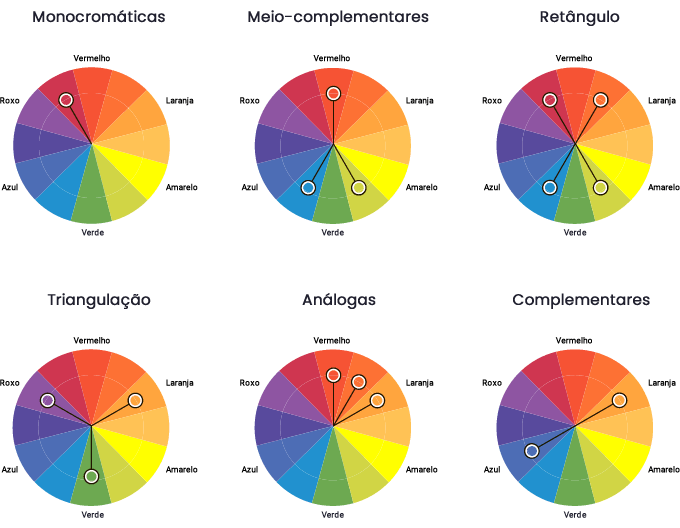

Trabalhando com Css 3
Harmonização De cores
Toda pagina da web, é escolhida um paleta de cores para ser seguida como padrão, e essas cores tem uma certa Harmonização, para isso, existe o circulo cromático, veja a seguir algumas formas de produzir suas paletas de cores:
